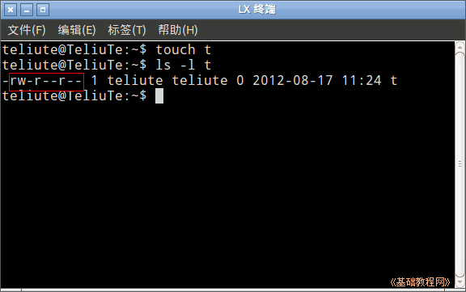
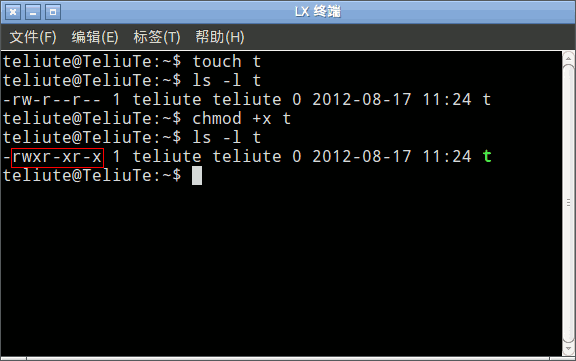
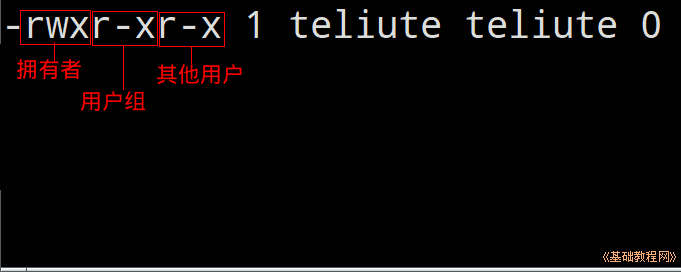
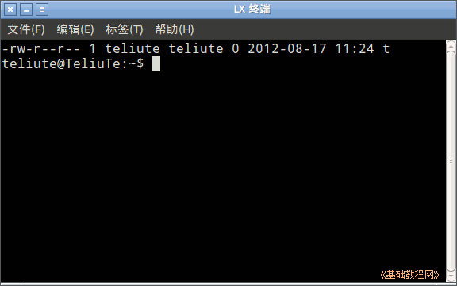
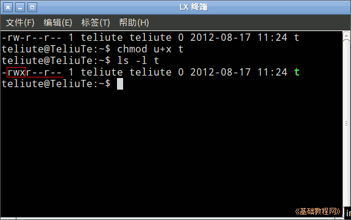

Ubuntu 命令行教程
作者：TeliuTe 来源：基础教程网
十二、chmod 设置文件属性命令 返回目 录 下一课
1、chmod 设置文件属性命令
1）打开终端，显示当前为主文件夹，用 touch t 命令创建一个文件 t ；
2）输入命令 ls -l t 查看文件 t 的属性，中间是个小写的 L ，其中的字母rwx分别代表读(read)、写(write)，还有一个运行x(execute)；

3）输入命令 chmod +x t 给文件加上可执行属性，再用 ls -l t 查 看一下；

4）这样文件就有了x可执行属性，三个x分别代表拥有者、用户组、其他用户都可以执行这个文件；

5）输入 clear && chmod -x t && ls -l t 命令，清屏并去掉可执行属性 && 是分别执行两个命令；

6）若是只让拥有者运行，其他用户不能，则用 chmod u+x t 命令(u后面直接加号)，只给 u(user)加 x 权限，g(group)用户组和o(other)其他用户都没有；

7）另外也可以用数字来代替这三位，7是全部5是只运行，可以用 777 或755，输入命令 chmod -x t 再输入 chmod 755 t 再输入 ls -l t
本节学习了chmod 设置文件属性命令的基础知识，如果你成功地完成了练习，请继续学习下一课内容；
本教程由86团学校TeliuTe制作|著作权所有
基础教程网：http://teliute.org/
美丽的校园……
转载和引用本站内容，请保留版权信息和本站链接。